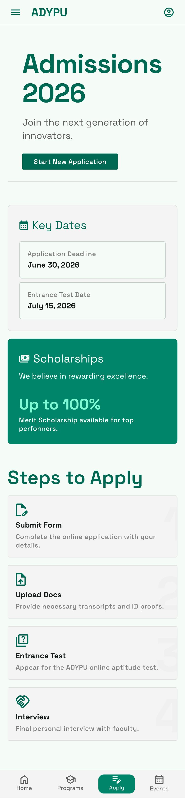
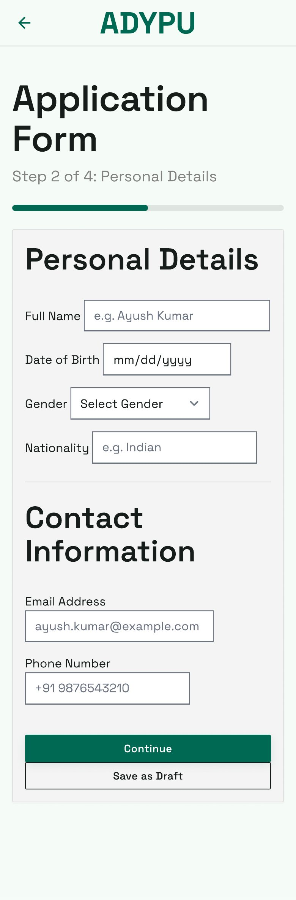
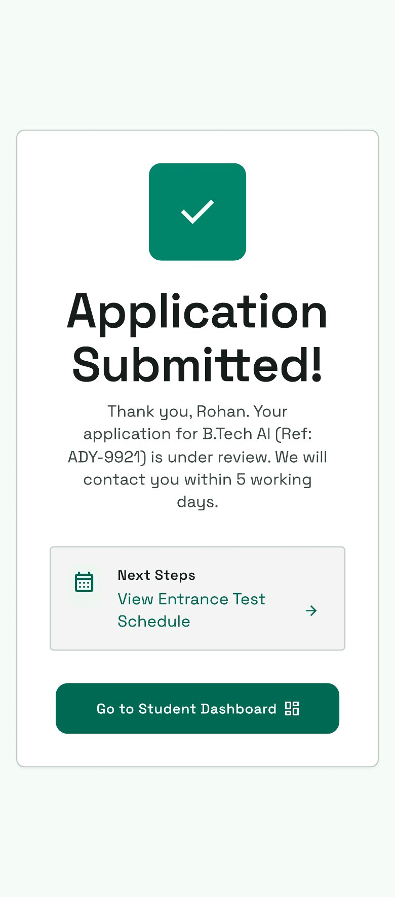
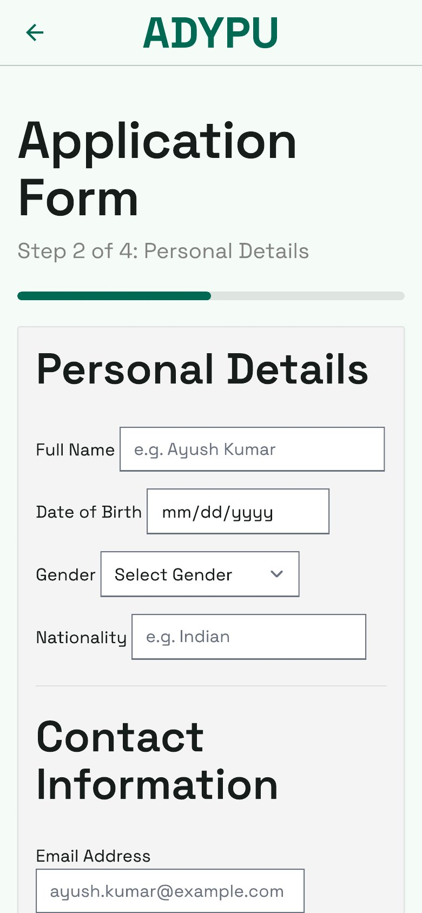
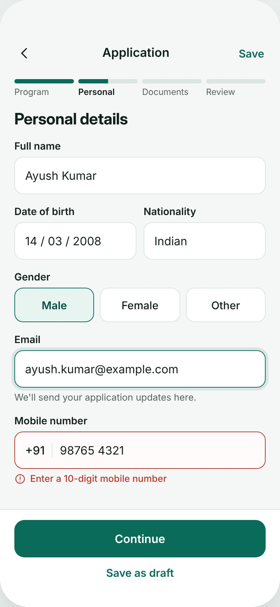

Lost before applying.
Most students choose a college on their phone. ADYPU's site was built for desktop.
I looked at the current site through a student's eyes, on a phone. Four problems stood out.
01
Hard to navigate
Desktop menus; key pages buried deep.
02
Hard to find
Fees, duration, eligibility on different pages.
03
Hard to apply
No single view of steps and deadlines.
04
Campus life hidden
Events are hard to find and register for.
A big university, a small screen.
How I researched
Context
Source: CollegeDekho university profile. The website is the first touchpoint for every applicant.
Who I'm designing for
Can I get in, how much is it, and when do I apply?
Goals
- Compare programs, fees and eligibility quickly
- Know every deadline
Frustrations
- Details spread across many desktop pages
- Application steps are unclear
By the time I hear about a workshop, the seats are gone.
Goals
- Find workshops and events early
- Register in seconds
Frustrations
- Hears about events late, through WhatsApp groups
- Registration forms are clunky
Proto-personas: built from my site audit and my own experience as an ADYPU student, not interviews yet. Next step: validate them with 5 student interviews.
Empathy map · Riya, applicant
Says
"Where are the fees? Am I even eligible?"
Thinks
"What if I miss the deadline and lose a year?"
Does
Googles, opens many tabs, checks CollegeDekho, asks seniors on WhatsApp.
Feels
Overwhelmed by scattered information and anxious about deadlines.
Research synthesis · affinity map
Navigation
Information
Applying
Campus life
Sticky notes from my mobile site audit, desk research and my own experience as a student, grouped into themes (affinity mapping). Interviews will add direct user quotes.
Every insight changed a screen.
Current journey · applying on a phone
Insights → design decisions
Everything one tap away.
Ideas I explored, and why
Why I dropped itApplicants won't install an app before they've even chosen a college.
Why I dropped itHides the main tasks; students had to hunt for pages.
Why I dropped itFeels endless on a phone, so people give up halfway.
Why I chose itNo download needed, main tasks always visible, and short steps with progress and draft saving.
Information architecture
- Replaced the deep desktop menu with 5 tabs based on what students do.
- Mapped 3 journeys: explore & apply, campus events, student portal.
- Every screen ends with a clear next step, so there are no dead ends.
User flow · explore and apply
Dark = start and end · dashed = decision point
Journey 1 · Explore and apply in 6 screens (hover a phone to scroll it)



Tap through the real flow.
Now viewingHome
The demo plays by itself. Tap the screen any time to try it yourself.
Key design decisions
- 4 facts first: duration, format, campus, tuition.
- One green for every action; amber only for deadlines.
- 48px tap targets and 15–16px body text.
Reviewed, then refined.


A review against mobile usability guidelines showed small text, cramped forms and mixed labels. Drag the slider to compare.
- Version 1Version 2
- Labels beside small inputsLabels above full-width fields
- Text mostly 10–12pxBody 15–16px
- "Step 2 of 4"4 labelled steps
- No validationInline error and helper text
Usability test plan Planned
Tasks
- Find the fees and duration of B.Des.
- Start an application and save it as a draft.
- Register for a campus event.
What I'll measure
- Time to find fees: old site vs new
- Task success and errors
- SUS ease-of-use score
Who & how
5 students (applicants and juniors), 15-minute sessions on their own phones, thinking aloud.
Goal: check that students find key facts faster and finish applying.
Outcome
What I learned
My first version still carried desktop habits. Reviewing it made that obvious.
The psychology
People finish what they can see the end of. Small labelled steps make a form feel doable.
What makes it different